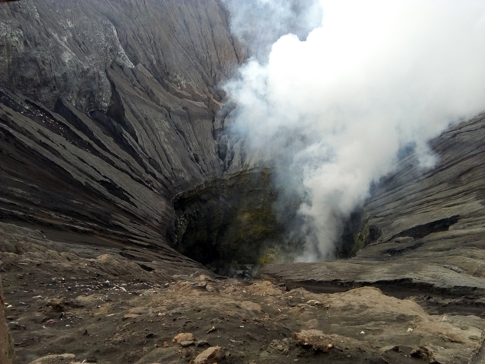

My Travelling Page
I have been travelling to the following countries (in the order I visited them):
- China
- Australia
- Vietnam
- Bali
- Lombok
- East Java
- Cambodia
- Thailand
Please find some pictures of my trips below.
China
Here are some pictures from the great wall of China, its 8000km long and we went to a bit that wasn't very touristy.
It's built on a mountain range so there's a lot more elevation change to it than you'd expect.
It was amazing to see the wall snaking its way over the mountains as far as the eye could see in eiher direction.

Some striking scenery, despite the mountainous terrain, this was a section of the wall where the mongolians managed to break through.
Bali
Bali was ok, I found it very touristy. I did climbing Mount batur at 3am for sunrise was probably my personal highlight from the trip. Lots of
Australians go there as it's cheap and fairly close to them.
Some dude overlooking the mt Batur crater.
The Gili isnalnds had some of the clearest water I've seen anywhere in the world, really good snorkelling conditions and its a sea turtle breeding ground.

Another shot of Mt Batur.
Java
Java was an interesting place, I took a few days away from Bali to check out a Mt Bromo, which is an active volcano and it was well worth it.
Walking along the edge of Mt Bromo's crater, the martian-like landscape below is made from the lava pouring down the side of the volcano every 10 or so years.
Mt Bromo at sunrise with another volcano in the background.

Looking into the Bromo crater, the noise and the smell was really unexpected.
Thailand
I rented a moped in Thailand to ride around on, Northern Thailand is very scenic and the roads are great, however if you want to
party or enjoy some warmer weather, you'll have to go south to the islands.